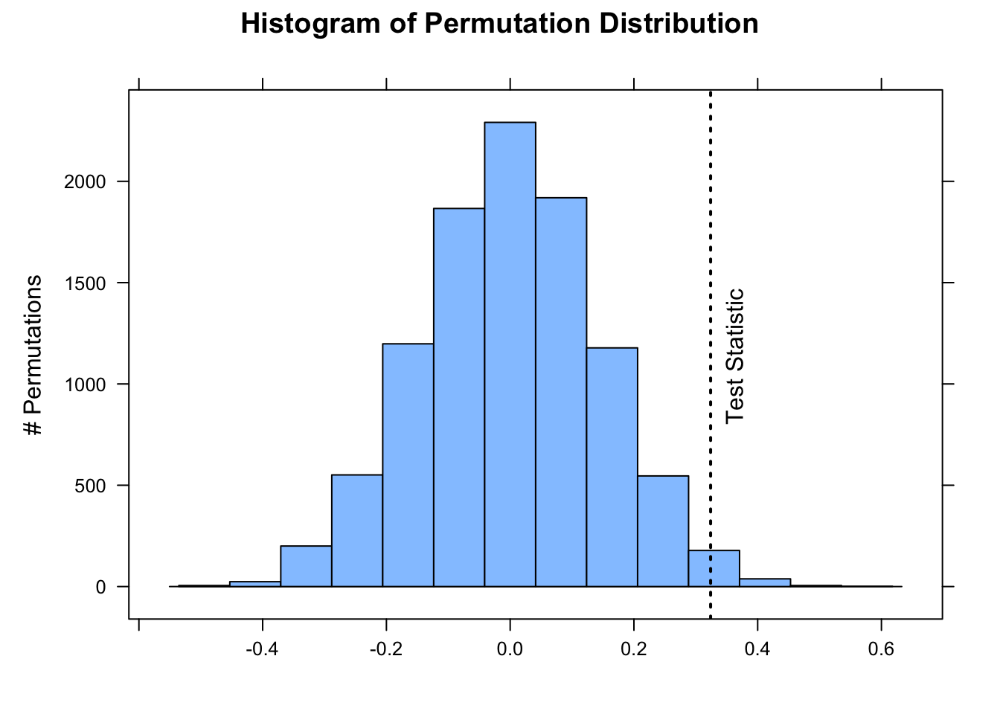
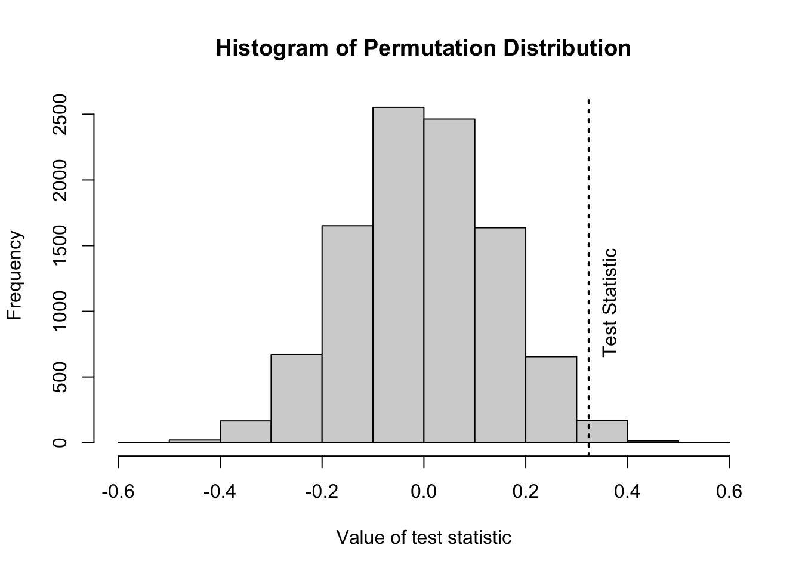
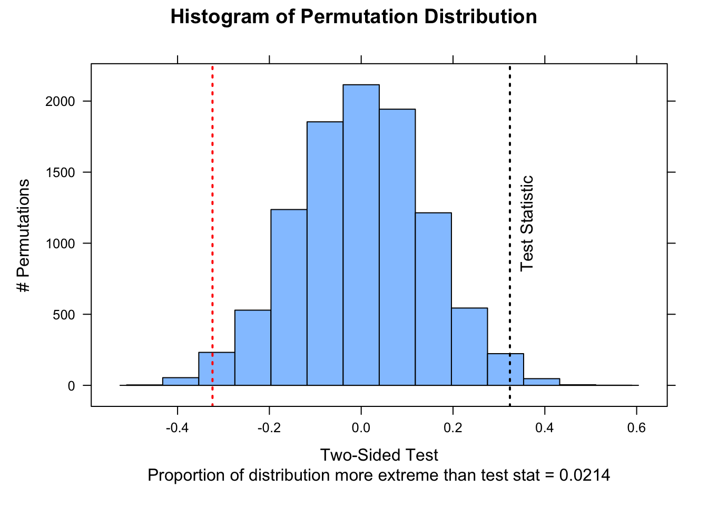
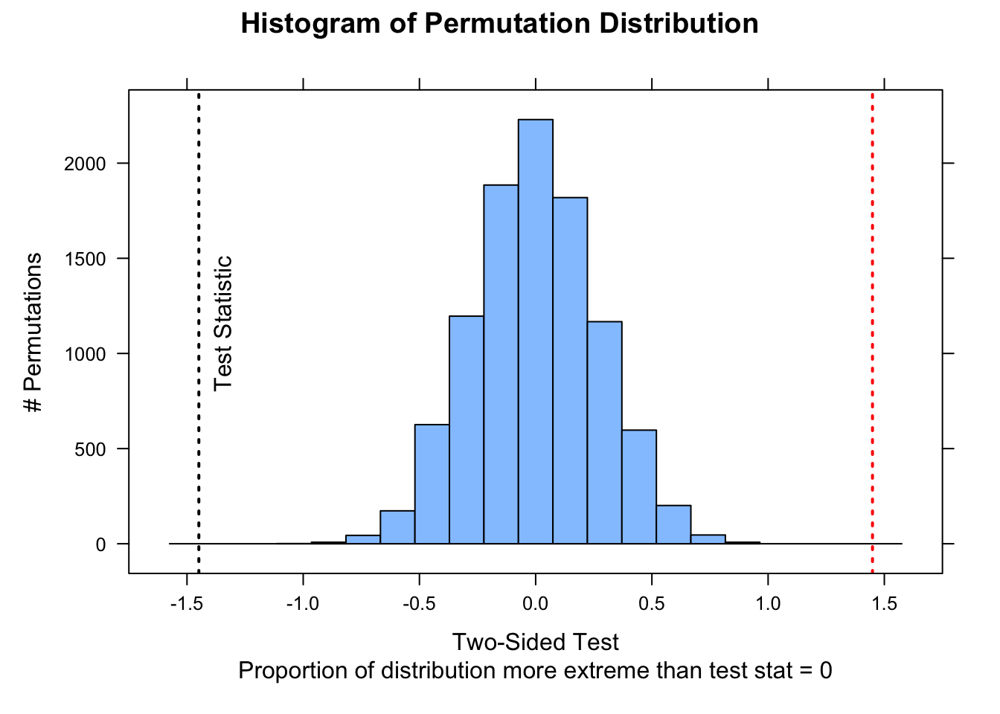
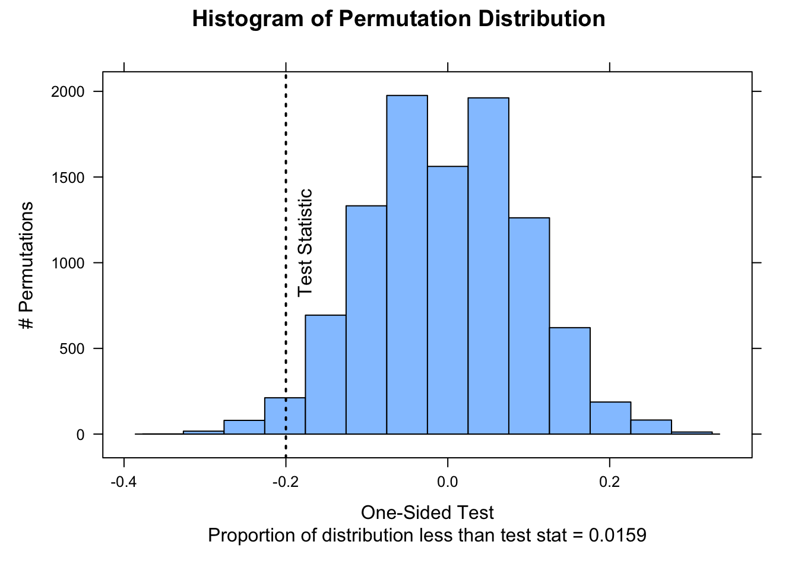
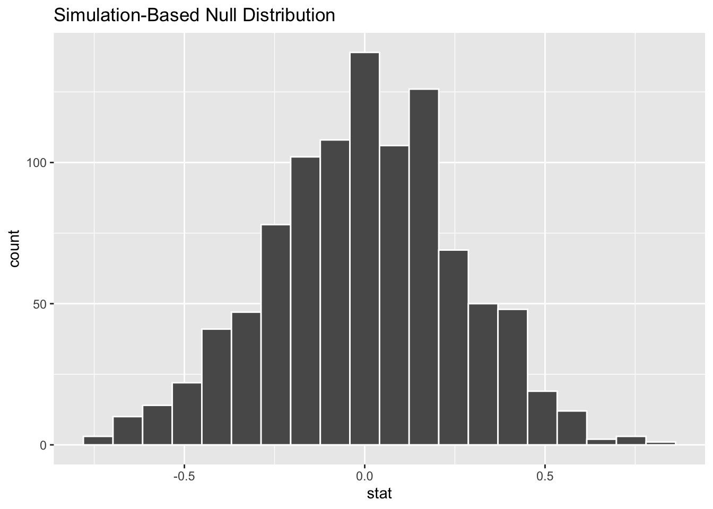
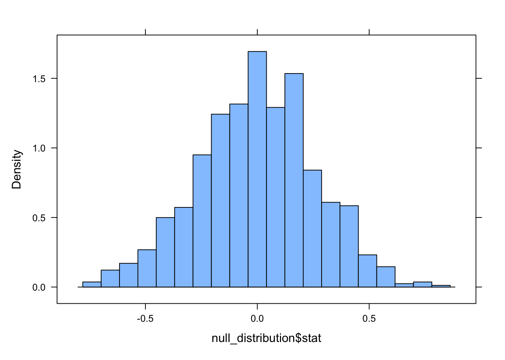
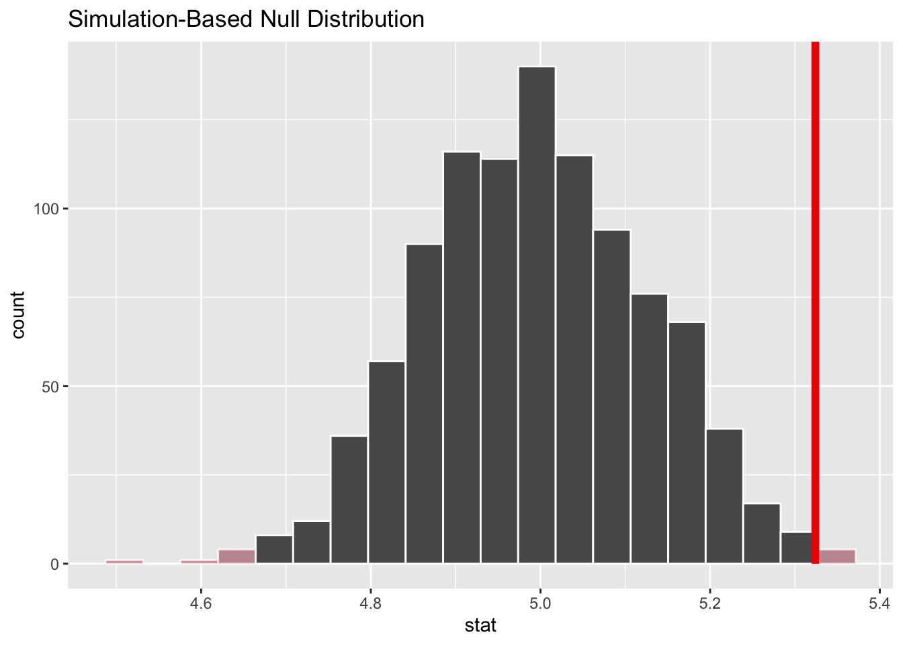
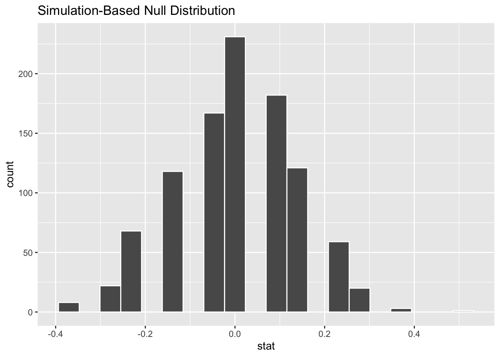
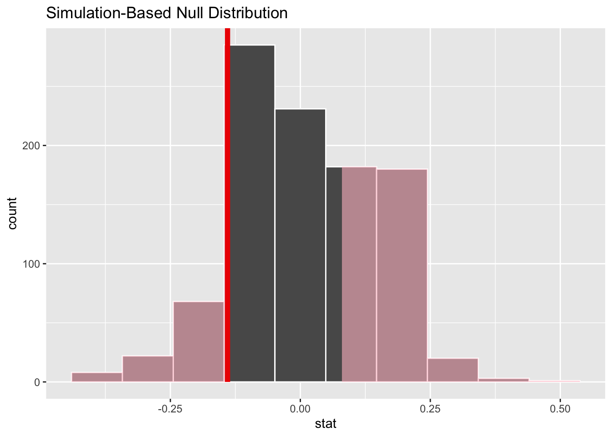

The inferential framework described in Module 15 is grounded in the idea that the sampling distributions for summary statistics of interest are appropriately modeled using well-known theoretical distributions… but that may not always be the case. An alternative approach is for us to build up (rather than assume) sampling distributions for statistics of interest using so-called “permutation” or “randomization” methods, which are a type of simulation. These approaches are conceptually related to the bootstrapping that we employed in Module 14 as an alternative method of generating sampling distributions and CIs.
Like bootstrapping, permutation/randomization tests generate a kind of sampling distribution (called a “permutation distribution” or “null distribution) for the null hypothesis to which we compare a test statistic calculated from our observations. We generate the permutation or null distribution by resampling from a set of actually observed outcomes while permuting (”shuffling”) some attribute of our actual observations in accordance with what we would expect if our null hypothesis were true.
Thus, whereas a “bootstrap sampling distribution” for generating CIs is created via simulation by repeatedly resampling observations from a single sample with replacement, a “permutation distribution” or “null distribution” is generated by resampling many times from that sample without replacement while shuffling attributes of each observation. Depending on what type of test we are doing (e.g., comparing a mean or proportion from a single sample to a hypothesized expectation, comparing means or proportions between two samples, evaluating whether regression coefficients are significant, etc.), exactly what we are shuffling in each resampling simulation may vary. In general permutation/randomization tests are extremely flexible and can be used for virtually any kind of test we may imagine.
For a true “permutation test”, we would sample all possible permutations of our original data to construct the permutation distribution, which can be computationally prohibitive if the sample size is even moderately large. However, we can conduct “approximate permutation tests” by simply using a large number of resamples to approximate the permutation distribution. These are generally referred to as randomization tests.
Let’s use the same data we used in Module 15 and conduct the same kinds of statistical tests we did previously, but this time we will use randomization to generate approximate permutation distributions for test statistics under the null hypothesis.
16.4 Working with Means
One Sample Permutation Test
Recall that in one of the tests we conducted in Module 15 was to evaluate whether vervet monkeys trapped during the 2015 trapping season in South Africa differed in weight from the expectation based on previous years (i.e., \(H_0: \mu_0 = 5.0\ kg\)). Here, we start by generating a test statistic that is the actual difference between our observed mean and the expected mean rather than an \(Z\) or \(T\) score estimating how many SEs our observed mean is away from the expected population mean.
f <-"https://raw.githubusercontent.com/difiore/ada-datasets/main/vervet-weights.csv"d <-read_csv(f, col_names =TRUE)x <- d$weight # current weightsn <-length(x)m <-mean(x) # average weight of our samplemu <-5# expected weight (null hypothesis)(actual_diff <- m - mu) # difference between our sample and expected
## [1] 0.3239216
# we use this as our test statistic!
Recall that permutation/randomization tests work by resampling and shuffling attributes of the observed data many times in order to come up with a distribution of test statistics that we might plausibly get under a particular null hypothesis. They do not rely on assuming that the data come from a particular theoretical distribution.
What is it that we would need to permute about our vervet body size data for it to be consistent with the null hypothesis of no difference between our sample mean of 2015 weights and the expectation based on weights from previous seasons, i.e., that \(mean\ observed - expected\ weights\) (\(\mu_A - \mu_0\)) = ZERO? Well, we could simply randomize the sign of the value of \(individual\ observed - expected\ weights\) in each simulation and then take the mean to generate a permutation distribution of \(mean\ observed - expected\ weights\) under the null hypothesis.
The p value calculated for a permutation/randomization test is the probability of getting a test statistic, by chance, as or more extreme than our observed one. We can calculate this empirically based on the permutation distribution, simply by counting the number of simulated test statistics that exceed our observed test statistic and then dividing by the number of permutations.
NOTE: Sometimes, we add 1 to both the numerator and denominator for this calculation to ensure that we never have a p value of exactly 0.
Below, we do 10,000 permutations where we randomly shuffle the sign of each individual observation’s difference from the expected mean under the null hypothesis. We then compare the observed difference between the mean of our sample and the expected mean to this distribution and calculate the p value associated with getting a difference as or more extreme than we observed. Lastly, we plot the approximate permutation distribution we generated and superimpose our observed difference as the test statistic.
nperm <-10000# number of permutation simulationspermuted_diff <-vector(length = n) # set up a dummy vector to hold results for each permutationfor (i in1:nperm) {# now we scramble the sign of individual observed - expected weights, and# then take mean permuted_diff[[i]] <-mean(sample(c(-1, 1), length(x), replace =TRUE) *abs(x - mu))}# calculate the two.sided p value(p <- (sum(permuted_diff >=abs(actual_diff)) +sum(permuted_diff <=-abs(actual_diff)))/nperm)
# or add 1 to both numerator and denominator to avoid p = 0histogram(permuted_diff, type ="count", xlab ="", ylab ="# Permutations", main ="Histogram of Permutation Distribution")ladd(panel.abline(v = actual_diff, lty =3, lwd =2))ladd(panel.text(x = actual_diff, y = nperm *0.08, "Test Statistic", srt =90, pos =4,offset =1))

The function perm.test from the package {jmuOutlier} conducts the same kind of test. By default, the function runs 10,000 simulations, and the test statistic being calculated is the mean, but other functions are possible.
library(jmuOutlier)# first show plotperm.test(x, alternative ="two.sided", mu = mu, plot =TRUE, num.sim = nperm)abline(v = actual_diff, lty =3, lwd =2)text(x = actual_diff, y = nperm *0.065, "Test Statistic", srt =90, pos =4, offset =1)

# then 2 tailed p valueperm.test(x, alternative ="two.sided", mu = mu, plot =FALSE, num.sim = nperm)
## [[1]]
## [1] "One-sample permutation test was performed."
##
## [[2]]
## [1] "p-value was estimated based on 10000 simulations."
##
## $alternative
## [1] "two.sided"
##
## $mu
## [1] 5
##
## $p.value
## [1] 0.02
detach(package:jmuOutlier)
We can also write our own custom function to perform the same kind of 1-sample permutation test!
perm1samp <-function(x, stat ="mean", mu =0, nperm =10000, alternative =c("two.sided","less", "greater")) {# can modify function by adding alternative `stat=` test_data <- x - mu n <-length(test_data)if (stat =="mean") { myfun <-function(x) {mean(x) } } test_stat <-myfun(test_data) perm_stat <-vector(length = nperm)for (i in1:nperm) { perm_stat[[i]] <-myfun(sample(c(-1, 1), n, replace =TRUE) *abs(test_data)) }# or, as a 1-liner that does not require a loop perm_stat <-# replicate(nperm, myfun(sample(c(-1,1), n, replace=TRUE) *# abs(test_data)))if (alternative[1] =="less") { p_perm <-sum(perm_stat <= test_stat)/nperm } elseif (alternative[1] =="greater") { p_perm <-sum(perm_stat >= test_stat)/nperm } else { p_perm <-sum(abs(perm_stat) >=abs(test_stat))/nperm }list(test_stat = test_stat, perm_stat = perm_stat, p_perm = p_perm, type = alternative[1])}nperm <-10000output <-perm1samp(x, stat ="mean", mu = mu, nperm = nperm)histogram(output$perm_stat, type ="count", ylab ="# Permutations", main ="Histogram of Permutation Distribution",xlab =ifelse(output$type =="less"| output$type =="greater", paste0("One-Sided Test\nProportion of distribution ", output$type, " than test stat = ", output$p_perm), paste0("Two-Sided Test\nProportion of distribution more extreme than test stat = ", output$p_perm)))ladd(panel.abline(v = output$test_stat, lty =3, lwd =2))if (output$type =="two.sided") {ladd(panel.abline(v =-output$test_stat, lty =3, lwd =2, col ="red"))}ladd(panel.text(x = output$test_stat, y = nperm *0.08, "Test Statistic", srt =90,pos =4, offset =1))

Two Sample Permutation Test
Another of the tests we conducted in Module 15 was to evaluate whether male and female black-and-white colobus differ in body weight. Let’s load in that data again and then calculate, as a test statistic, the difference in average weights for females versus males.
f <-"https://raw.githubusercontent.com/difiore/ada-datasets/main/colobus-weights.csv"d <-read_csv(f, col_names =TRUE)head(d)
## # A tibble: 6 × 3
## id weight sex
## <dbl> <dbl> <chr>
## 1 1 7.24 male
## 2 2 6.09 male
## 3 3 6.97 male
## 4 4 6.98 male
## 5 5 6.08 male
## 6 6 6.22 male
To test whether this difference is significant by permutation, we would generate a permutation distribution consistent with a null hypothesis of no difference in weight between the sexes by simulation, where, for each simulation, we permute the sex assigned to each observation and then calculate the difference (female - male) between the sexes in each permuted set. We then calculate the p value associated with getting a difference between male and female mean weights as or more extreme than the one we observed. [We again calculate this as a “two-sided” probability, i.e., we are testing the \(H_A\) that…
\(mean(female) - mean(male) ≠ 0\)
rather than…
\(mean(female) - mean(male) > 0\)
or…
\(mean(female) - mean(male) < 0\)
both of which would be “one-sided” tests.]
Lastly, we visualize the approximate permutation distribution and superimpose our observed difference in weights between males and females.
nperm <-10000# number of permutation simulations# create a dummy vector to hold results for each permutationpermuted_diff <-vector(length = n)test_data <- dfor (i in1:nperm) {# scramble the sex vector `sample()` with a vector as an argument yields a# random permutation of the vector test_data$sex <-sample(test_data$sex) x <- test_data[test_data$sex =="female", ]$weight y <- test_data[test_data$sex =="male", ]$weight permuted_diff[[i]] <-mean(x) -mean(y)}(p <- (sum(permuted_diff >=abs(actual_diff)) +sum(permuted_diff <=-abs(actual_diff)))/nperm)
## [1] 0
histogram(permuted_diff, type ="count", xlab ="", ylab ="# Permutations", main ="Histogram of Permutation Distribution",xlim =c(-1.75, 1.75))
The same perm.test() function from {jmuOutlier} that we used above for a 1-sample permutation test also allows for 2-sample tests.
# library(jmuOutlier) x <- d[d$sex=='female',]$weight y <-# d[d$sex=='male',]$weight mu <- 0 # expected difference between means under# null perm.test(x, y, alternative = 'two.sided', mu = mu, plot = TRUE, num.sim# = nperm) abline(v=actual_diff) perm.test(x, y, alternative = 'two.sided', mu# = mu, plot = FALSE, num.sim = nperm) detach(package:jmuOutlier)
NOTE: In this example, the vertical line showing our actual difference in means is off-scale on the left-hand side of the plot!
The function independence_test() from the {coin} package conducts the same kind of 2-sample test with a simpler construction that does not require us specifying two vectors to compare…
library(coin)
## Loading required package: survival
independence_test(weight ~as.factor(sex), alternative ="two.sided", distribution ="approximate",data = d)
##
## Approximative General Independence Test
##
## data: weight by as.factor(sex) (female, male)
## Z = -5.4998, p-value < 1e-04
## alternative hypothesis: two.sided
detach(package:coin)
Finally, we can also write our own generic 2-sample permutation function that allows us to compare custom test statistics. Here, we first define a function for our test statistic, mean_diff(), i.e., a difference of means, and then define a function for the test.
perm2samp <-function(x, y, stat ="mean_diff", nperm =10000, alternative =c("two.sided","less", "greater")) {# can modify function by adding alternative `stat=`if (stat =="mean_diff") { myfun <-function(x, y) {mean(x) -mean(y) } } test_stat <-myfun(x, y) test_data <-c(x, y) # puts two vectors of samples together perm_stat <-vector(length = nperm)for (i in1:nperm) { indexes <-sample(length(test_data), length(x), replace =FALSE)# the row above generates a randomized vector of indices that is the# length of the x sample... this is equivalent to permuting which group# the x sample belongs to s1 <- test_data[indexes] s2 <- test_data[-indexes] perm_stat[[i]] <-myfun(s1, s2) }if (alternative[1] =="less") { p_perm <-sum(perm_stat <= test_stat)/nperm } elseif (alternative[1] =="greater") { p_perm <-sum(perm_stat >= test_stat)/nperm } else { p_perm <-sum(abs(perm_stat) >=abs(test_stat))/nperm }list(test_stat = test_stat, perm_stat = perm_stat, p_perm = p_perm, type = alternative[1])}x <- d[d$sex =="female", ]$weighty <- d[d$sex =="male", ]$weightoutput <-perm2samp(x, y, stat ="mean_diff", nperm =10000)histogram(output$perm_stat, type ="count", ylab ="# Permutations", main ="Histogram of Permutation Distribution",xlab =ifelse(output$type =="less"| output$type =="greater", paste0("One-Sided Test\nProportion of distribution ", output$type, " than test stat = ", output$p_perm), paste0("Two-Sided Test\nProportion of distribution more extreme than test stat = ", output$p_perm)), xlim =c(-1.75, 1.75))ladd(panel.abline(v = output$test_stat, lty =3, lwd =2))if (output$type =="two.sided") {ladd(panel.abline(v =-output$test_stat, lty =3, lwd =2, col ="red"))}ladd(panel.text(x = output$test_stat, y = nperm *0.08, "Test Statistic", srt =90,pos =4, offset =1))

Here’s a graphical version of what we are doing…
16.5 Working with Proportions
We can take the same permutation/randomization approach and use the same 1- and 2-sample tests with proportion data.
In Module 15, we looked at a set of data on captures of birds in 30 nets on a morning of mist netting (i.e., a “success” or “failure” for every net during a netting session) and tested whether the proportion of “successes” was lower than the expectation of 80% was lower than in previous years. The code below lets us do this using a 1-sample randomization test.
v <-c(0, 1, 1, 1, 0, 1, 0, 0, 1, 1, 0, 0, 1, 1, 0, 1, 1, 0, 0, 1, 1, 1, 0, 1, 1,0, 1, 0, 1, 1)nperm <-10000# using {jmuOutlier} library(jmuOutlier) perm.test(v, alternative='less',# mu=0.8, plot=FALSE, num.sim = nperm) detach(package:jmuOutlier)# using our custom functionoutput <-perm1samp(v, stat ="mean", mu =0.8, alternative ="less", nperm = nperm)histogram(output$perm_stat, type ="count", ylab ="# Permutations", main ="Histogram of Permutation Distribution",xlab =ifelse(output$type =="less"| output$type =="greater", paste0("One-Sided Test\nProportion of distribution ", output$type, " than test stat = ", output$p_perm), paste0("Two-Sided Test\nProportion of distribution more extreme than test stat = ", output$p_perm)))ladd(panel.abline(v = output$test_stat, lty =3, lwd =2))if (output$type =="two.sided") {ladd(panel.abline(v =-output$test_stat, lty =3, lwd =2, col ="red"))}ladd(panel.text(x = output$test_stat, y = nperm *0.08, "Test Statistic", srt =90,pos =4, offset =1))

In Module 15, we also compared data on captures of two species of bats over the course of a week of nightly mist-netting. For each species, the record indicates whether a captured female was lactating (1) or not (0), and we wanted to test whether this proportion differed between species. We can do this with a 2-sample randomization test.
# this calculates a difference in proportionsnperm <-10000# using {jmuOutlier} library(jmuOutlier) perm.test(species1, species2,# alternative = 'two.sided', plot=FALSE, num.sim = nperm)# detach(package:jmuOutlier)# using our custom functionoutput <-perm2samp(species1, species2, stat ="mean_diff", nperm = nperm)histogram(output$perm_stat, type ="count", ylab ="# Permutations", main ="Histogram of Permutation Distribution",xlab =ifelse(output$type =="less"| output$type =="greater", paste0("One-Sided Test\nProportion of distribution ", output$type, " than test stat = ", output$p_perm), paste0("Two-Sided Test\nProportion of distribution more extreme than test stat = ", output$p_perm)))ladd(panel.abline(v = output$test_stat, lty =3, lwd =2))if (output$type =="two.sided") {ladd(panel.abline(v =-output$test_stat, lty =3, lwd =2, col ="red"))}ladd(panel.text(x = output$test_stat, y = nperm *0.08, "Test Statistic", srt =90,pos =4, offset =1))
NOTE: The p values associated with these permutation/randomization based tests on proportions are not so close to those using the prop.test() function for the same data that we ran in Module 15. This is because prop.test() is calculating the p value associated with our test statistic presuming that the distribution of sampling proportions is roughly normal, whereas this test is calculating p values by counting the proportion of simulations!
16.6 Using the {infer} Package
The {infer} package offers a convenient set of functions and a standard workflow for using permutation methods for hypothesis testing, whether we are dealing with means, differences between means, proportions, or differences in proportions.
The {infer} package includes a set of functions that allow us to easily generate shuffled or permuted datasets and then conduct hypothesis testing with these datasets just as we have done above. We will explore how we do this with the {infer} package using the black-and-white colobus weight data we used above.
We first read in our data and load the {infer} package:
f <-"https://raw.githubusercontent.com/difiore/ada-datasets/main/colobus-weights.csv"d <-read_csv(f, col_names =TRUE)library(infer)
Then, we use the function specify() to indicate the variables we are interested in. The specify() function takes an argument of formula= response~explanatory. If we are working with proportion data, we also need to provide an argument for what value of the explanatory variable counts as a success, using success=, but that is not the case for our colobus weight data, where our response variable is numeric, not binary.
d <- d |>specify(formula = weight ~ sex)# this does not change the data frame but adds some meta datahead(d)
## Response: weight (numeric)
## Explanatory: sex (factor)
## # A tibble: 6 × 2
## weight sex
## <dbl> <fct>
## 1 7.24 male
## 2 6.09 male
## 3 6.97 male
## 4 6.98 male
## 5 6.08 male
## 6 6.22 male
The function hypothesize() is then used to declare the null hypothesis we wish to test. We use the argument null="point" if we are doing a test of a single mean (mu=) or proportion (p=) or null="independence" if we are doing a test of the independence of two variables (i.e., a two-sample test).
d <- d |>hypothesize(null ="independence")# again, this does not change the data frame but adds some meta datahead(d)
## Response: weight (numeric)
## Explanatory: sex (factor)
## Null Hypothesis: independence
## # A tibble: 6 × 2
## weight sex
## <dbl> <fct>
## 1 7.24 male
## 2 6.09 male
## 3 6.97 male
## 4 6.98 male
## 5 6.08 male
## 6 6.22 male
We then use the generate() function to generate replicates of “shuffled” or “permuted” data under the assumption that the null hypothesis is true. That is, we generating datasets from which we then derived a null distribution for our statistic of interest.
d_permutations <- d |>generate(reps =1000, type ="permute")nrow(d)
## [1] 40
nrow(d_permutations)
## [1] 40000
Next, we use calculate() to calculate summary statistics of interest for each replicate. We can calculate a variety of different statistics, including the mean (“mean”), proportion (“prop”), difference in means (“diff in means”), difference in proportions (“diff in props”), and others. This step generates a null distribution for our summary statistic. For differences in means or proportions, we need to also include an argument specifying the order of the levels of the explanatory variable for subtraction.
null_distribution <- d_permutations |>calculate(stat ="diff in means", order =c("male", "female"))# to subtract female weight from male weight
We can then use the function visualize() to examine the null distribution (alternatively, we can use histogram(), in which case we then need to specify the variable name="stat")
visualize(null_distribution, bins =20)

histogram(null_distribution$stat, nint =20)

So, now we have a null or permutation distribution for the test statistic… then, we can also use {infer} package functions to easily calculate hte observed summary statistic that we want to compare to this null distribution by simply leaving out the hypothesize() and generate() steps.
observed_stat <-read_csv(f, col_names =TRUE) |>specify(weight ~ sex) |>calculate(stat ="diff in means", order =c("male", "female"))
## Rows: 40 Columns: 3
## ── Column specification ────────────────────────────────────────────────────────
## Delimiter: ","
## chr (1): sex
## dbl (2): id, weight
##
## ℹ Use `spec()` to retrieve the full column specification for this data.
## ℹ Specify the column types or set `show_col_types = FALSE` to quiet this message.
We can plot this observed test statistic atop the null distribution using the shade_p_value() function, which has two arguments: a value for obs_stat= and a direction= (“left,”right”, or “both”) corresponding to two different one-tailed or a two-tailed alternative hypothesis.
NOTE: This is not very interesting because the observed statistic is way outside of the null distribution!
The function get_p_value() with arguments of the null distribution, the observed statistic, and the direction will give us the p value generated by permutation.
get_p_value(null_distribution, observed_stat, direction ="both")
## Warning: Please be cautious in reporting a p-value of 0. This result is an approximation
## based on the number of `reps` chosen in the `generate()` step.
## ℹ See `get_p_value()` (`?infer::get_p_value()`) for more information.
## # A tibble: 1 × 1
## p_value
## <dbl>
## 1 0
As an additional example of this approach, let’s consider the vervet trapping data from above once again. Recall that we want to evaluate whether vervet monkeys trapped during the 2015 trapping season differed in weight from the expectation based on previous years, which was 5.0 kg. How do we do this using the {infer} workflow?
f <-"https://raw.githubusercontent.com/difiore/ada-datasets/main/vervet-weights.csv"d <-read_csv(f, col_names =TRUE)null_distribution <- d |>specify(response = weight) |># here we specify just a response, not a formulahypothesize(null ="point", mu =5) |># here we are comparing a sample to an expectationgenerate(reps =1000, type ="bootstrap") |>calculate(stat ="mean")# Note that here type='bootstrap'! This is actually doing something a little# different than we did above... it is sampling *with replacement* from our set# of weights rather than randomly permuting the sign of the difference of each# value from the mean! (Here, the number of observations sampled is equal to# the original number of observations)observed_stat <- d |>specify(response = weight) |>calculate(stat ="mean")visualize(null_distribution, bins =20) +shade_p_value(obs_stat = observed_stat,direction ="both")

get_p_value(null_distribution, observed_stat, direction ="both")
Note that this p value is pretty similar to that returned by jmuOutlier::perm.test() and by our custom perm1samp() function, though as noted above, those use slightly different permutation processes.
CHALLENGE
As a final example of this approach, we will again examine data on captures of two species of bats over the course of a week of nightly mist-netting. For each species, remember that the record indicates whether a captured female was lactating (1) or not (0).
Now, use the {infer} workflow to test whether the proportion of lactating females among the captured bats differs between species.
Show Code
null_distribution <- d |>specify(lactating ~ species, success ="1") |>hypothesize(null ="independence") |>generate(reps =1000, type ="permute") |>calculate(stat ="diff in props", order =c("species1", "species2"))# NOTE: This runs a LOT slower than our custom permutation function for the# same number of reps!visualize(null_distribution, bins =20)

Show Code
observed_stat <- d |>specify(lactating ~ species, success ="1") |>calculate(stat ="diff in props", order =c("species1", "species2"))visualize(null_distribution, bins =10) +shade_p_value(observed_stat, direction ="both")

Show Code
get_p_value(null_distribution, observed_stat, direction ="both")
This p value is similar to that returned by our custom permutation test!
16.7 Advantages of Permutation Tests
Some of the key advantages of permutation tests include the following:
They are “distribution-free” - i.e., they do not make any assumptions about the distribution of the underlying data
There is no presumption of random sampling from some imaginary hypothetical population
Unlike some other nonparametric tests, they do not depend on large sample sizes for their validity
Many common nonparametric tests are permutation tests, just carried out on RANKS
They can be used with many kinds of data (nominal, ordinal, interval/ratio)
They are relatively straightforward to conduct and interpret
Concept Review
Permutation/randomization tests involve these steps:
Compute a sample statistic of your choice (mean, median, proportion, etc.) using the set of original observations
Rearrange attributes of the original observations in all or a very large number of random possible permutations, computing the test statistic each time, to yield a permutation or null distribution for the test statistic under the null hypothesis
Look at the value of the sample statistic relative to the permutation distribution
Based on the permutation distribution, calculate the probability of seeing a sample statistic as high or higher than that observed, i.e., the portion of the permutation distribution that equals or exceed the value of the sample statistic… this is the permutation test p value
jmuOutlier::perm.test(), coin::indepedence_test(), or write your own!
{infer} workflow
NOTE: This permutation-based approach to statistical inference is consistent with the philosophy promoted by statistician Allen Downey that, “There is really only test”, and that at all statistical tests are based on the same framework. Note that this is still a form of null hypothesis significance testing, or NHST!
Source Code
# Using Permutation Tests {#module-16}## Objectives> The objective of this module is to extend our *hypothesis testing* framework to include permutation/randomization tests.## Preliminaries- Install the following packages in ***R***: [{coin}](https://cran.r-project.org/web/packages/coin/coin.pdf), [{jmuOutlier}](https://cran.r-project.org/web/packages/jmuOutlier/jmuOutlier.pdf), and [{infer}](https://cran.r-project.org/web/packages/infer/infer.pdf)- Load {tidyverse} and {mosaic}```{r}#| include: false#| message: falselibrary(tidyverse)library(mosaic)```## Permutation MethodsThe inferential framework described in [**Module 15**](#module-15) is grounded in the idea that the sampling distributions for summary statistics of interest are appropriately modeled using well-known theoretical distributions... but that may not always be the case. An alternative approach is for us to build up (rather than assume) sampling distributions for statistics of interest using so-called "permutation" or "randomization" methods, which are a type of simulation. These approaches are conceptually related to the bootstrapping that we employed in [**Module 14**](#module-14) as an alternative method of generating sampling distributions and CIs.Like bootstrapping, permutation/randomization tests generate a kind of sampling distribution (called a "permutation distribution" or "null distribution) for the null hypothesis to which we compare a test statistic calculated from our observations. We generate the permutation or null distribution by **resampling** from a set of actually observed outcomes while permuting ("shuffling") some attribute of our actual observations in accordance with what we would expect if our null hypothesis were true.Thus, whereas a "bootstrap sampling distribution" for generating CIs is created via simulation by repeatedly resampling observations **from a single sample with replacement**, a "permutation distribution" or "null distribution" is generated by resampling many times from that sample **without replacement** while shuffling attributes of each observation. Depending on what type of test we are doing (e.g., comparing a mean or proportion from a single sample to a hypothesized expectation, comparing means or proportions between two samples, evaluating whether regression coefficients are significant, etc.), exactly what we are shuffling in each resampling simulation may vary. In general permutation/randomization tests are extremely flexible and can be used for virtually any kind of test we may imagine.For a true "permutation test", we would sample all possible permutations of our original data to construct the permutation distribution, which can be computationally prohibitive if the sample size is even moderately large. However, we can conduct "approximate permutation tests" by simply using a large number of resamples to approximate the permutation distribution. These are generally referred to as **randomization tests**.Let's use the same data we used in [**Module 15**](#module-15) and conduct the same kinds of statistical tests we did previously, but this time we will use randomization to generate approximate permutation distributions for test statistics under the null hypothesis.## Working with Means### One Sample Permutation Test {.unnumbered}Recall that in one of the tests we conducted in [**Module 15**](#module-15) was to evaluate whether vervet monkeys trapped during the 2015 trapping season in South Africa differed in weight from the expectation based on previous years (i.e., $H_0: \mu_0 = 5.0\ kg$). Here, we start by generating a test statistic that is the actual difference between our observed mean and the expected mean rather than an $Z$ or $T$ score estimating how many SEs our observed mean is away from the expected population mean.```{r}#| message: falsef <-"https://raw.githubusercontent.com/difiore/ada-datasets/main/vervet-weights.csv"d <-read_csv(f, col_names=TRUE)x <- d$weight # current weightsn <-length(x)m <-mean(x) # average weight of our samplemu <-5# expected weight (null hypothesis)(actual_diff <- m - mu) # difference between our sample and expected# we use this as our test statistic!```Recall that permutation/randomization tests work by resampling and shuffling attributes of the observed data many times in order to come up with a distribution of test statistics that we might plausibly get under a particular null hypothesis. They do not rely on assuming that the data come from a particular theoretical distribution.What is it that we would need to permute about our vervet body size data for it to be consistent with the null hypothesis of no difference between our sample mean of 2015 weights and the expectation based on weights from previous seasons, i.e., that $mean\ observed - expected\ weights$ ($\mu_A - \mu_0$) = ZERO? Well, we could simply randomize the sign of the value of $individual\ observed - expected\ weights$ in each simulation and then take the mean to generate a permutation distribution of $mean\ observed - expected\ weights$ under the null hypothesis.The **p value** calculated for a permutation/randomization test is the probability of getting a test statistic, by chance, as or more extreme than our observed one. We can calculate this empirically based on the permutation distribution, simply by counting the number of simulated test statistics that exceed our observed test statistic and then dividing by the number of permutations.> **NOTE:** Sometimes, we add 1 to both the numerator and denominator for this calculation to ensure that we never have a p value of exactly 0.Below, we do 10,000 permutations where we randomly shuffle the sign of each individual observation's difference from the expected mean under the null hypothesis. We then compare the observed difference between the mean of our sample and the expected mean to this distribution and calculate the p value associated with getting a difference as or more extreme than we observed. Lastly, we plot the approximate permutation distribution we generated and superimpose our observed difference as the test statistic.```{r}#| fig-keep: "last"nperm <-10000# number of permutation simulationspermuted_diff <-vector(length=n) # set up a dummy vector to hold results for each permutationfor (i in1:nperm) {# now we scramble the sign of individual observed - expected weights, and then take mean permuted_diff[[i]] <-mean(sample(c(-1,1),length(x), replace=TRUE) *abs(x-mu))}# calculate the two.sided p value(p <- (sum(permuted_diff >=abs(actual_diff)) +sum(permuted_diff <=-abs(actual_diff))) / nperm)# or(p <-sum(abs(permuted_diff) >=abs(actual_diff)) / nperm)# or add 1 to both numerator and denominator to avoid p = 0histogram( permuted_diff,type ="count",xlab ="",ylab ="# Permutations",main ="Histogram of Permutation Distribution")ladd(panel.abline(v=actual_diff, lty=3, lwd=2))ladd(panel.text(x = actual_diff,y = nperm *0.08,"Test Statistic",srt =90,pos =4,offset =1))```The function `perm.test` from the package {jmuOutlier} conducts the same kind of test. By default, the function runs 10,000 simulations, and the test statistic being calculated is the mean, but other functions are possible.```{r}library(jmuOutlier)# first show plotperm.test(x, alternative ="two.sided", mu = mu, plot =TRUE, num.sim = nperm)abline(v=actual_diff, lty=3, lwd=2)text(x=actual_diff, y = nperm *0.065, "Test Statistic", srt=90, pos=4, offset=1)# then 2 tailed p valueperm.test(x, alternative ="two.sided", mu = mu, plot =FALSE, num.sim = nperm)detach(package:jmuOutlier)```We can also write our own custom function to perform the same kind of 1-sample permutation test!```{r}#| fig-keep: "last"#| cache: falseperm1samp <-function(x, stat="mean", mu=0, nperm=10000,alternative=c("two.sided","less","greater")){# can modify function by adding alternative `stat=` test_data <- x - mu n <-length(test_data)if (stat=="mean"){ myfun <-function(x){mean(x)} } test_stat <-myfun(test_data) perm_stat <-vector(length=nperm)for (i in1:nperm){ perm_stat[[i]] <-myfun(sample(c(-1,1), n, replace=TRUE) *abs(test_data)) }# or, as a 1-liner that does not require a loop# perm_stat <- replicate(nperm, myfun(sample(c(-1,1), n,# replace=TRUE) * abs(test_data)))if(alternative[1]=="less"){ p_perm <-sum(perm_stat <= test_stat) / nperm } elseif(alternative[1]=="greater"){ p_perm <-sum(perm_stat >= test_stat) / nperm } else { p_perm <-sum(abs(perm_stat) >=abs(test_stat)) / nperm }list(test_stat=test_stat, perm_stat=perm_stat, p_perm=p_perm, type=alternative[1]) }nperm <-10000output <-perm1samp(x, stat="mean", mu=mu, nperm=nperm)histogram( output$perm_stat,type ="count",ylab ="# Permutations",main ="Histogram of Permutation Distribution",xlab =ifelse( output$type =="less"| output$type =="greater",paste0("One-Sided Test\nProportion of distribution ", output$type," than test stat = ", output$p_perm ),paste0("Two-Sided Test\nProportion of distribution more extreme than test stat = ", output$p_perm ) ))ladd(panel.abline(v=output$test_stat, lty=3, lwd=2))if (output$type=="two.sided") {ladd(panel.abline(v =-output$test_stat,lty =3,lwd =2,col ="red" ))}ladd(panel.text(x = output$test_stat,y = nperm *0.08,"Test Statistic",srt =90,pos =4,offset =1 ))```### Two Sample Permutation Test {.unnumbered}Another of the tests we conducted in [**Module 15**](#module-15) was to evaluate whether male and female black-and-white colobus differ in body weight. Let's load in that data again and then calculate, as a test statistic, the difference in average weights for females versus males.```{r}#| message: falsef <-"https://raw.githubusercontent.com/difiore/ada-datasets/main/colobus-weights.csv"d <-read_csv(f, col_names=TRUE)head(d)x <- d[d$sex=="female",]$weighty <- d[d$sex=="male",]$weight(actual_diff <-mean(x) -mean(y))```To test whether this difference is significant by permutation, we would generate a permutation distribution consistent with a null hypothesis of *no difference in weight between the sexes* by simulation, where, for each simulation, we permute the sex assigned to each observation and then calculate the difference (female - male) between the sexes in each permuted set. We then calculate the p value associated with getting a difference between male and female mean weights as or more extreme than the one we observed. [We again calculate this as a "two-sided" probability, i.e., we are testing the $H_A$ that...$mean(female) - mean(male) ≠ 0$rather than...$mean(female) - mean(male) > 0$or...$mean(female) - mean(male) < 0$both of which would be "one-sided" tests.]Lastly, we visualize the approximate permutation distribution and superimpose our observed difference in weights between males and females.```{r}nperm <-10000# number of permutation simulations# create a dummy vector to hold results for each permutationpermuted_diff <-vector(length=n)test_data <- dfor (i in1:nperm) {# scramble the sex vector# `sample()` with a vector as an argument yields a random# permutation of the vector test_data$sex <-sample(test_data$sex) x <- test_data[test_data$sex=="female",]$weight y <- test_data[test_data$sex=="male",]$weight permuted_diff[[i]] <-mean(x) -mean(y)}(p <- (sum(permuted_diff >=abs(actual_diff)) +sum(permuted_diff <=-abs(actual_diff))) / nperm)histogram( permuted_diff,type ="count",xlab ="",ylab ="# Permutations",main ="Histogram of Permutation Distribution",xlim =c(-1.75, 1.75))ladd(panel.abline(v=actual_diff, lty=3, lwd=2))ladd(panel.text(x = actual_diff,y = nperm *0.08,"Test Statistic",srt =90,pos =4,offset =1))```The same `perm.test()` function from {jmuOutlier} that we used above for a 1-sample permutation test also allows for 2-sample tests.```{r}# library(jmuOutlier)# x <- d[d$sex=="female",]$weight# y <- d[d$sex=="male",]$weight# mu <- 0 # expected difference between means under null# perm.test(x, y, alternative = "two.sided", mu = mu, plot = TRUE, num.sim = nperm)# abline(v=actual_diff)# perm.test(x, y, alternative = "two.sided", mu = mu, plot = FALSE, num.sim = nperm)# detach(package:jmuOutlier)```> **NOTE:** In this example, the vertical line showing our actual difference in means is off-scale on the left-hand side of the plot!The function `independence_test()` from the {coin} package conducts the same kind of 2-sample test with a simpler construction that does not require us specifying two vectors to compare...```{r}library(coin)independence_test( weight ~as.factor(sex),alternative ="two.sided",distribution ="approximate",data = d)detach(package:coin)```Finally, we can also write our own generic 2-sample permutation function that allows us to compare custom test statistics. Here, we first define a function for our test statistic, `mean_diff()`, i.e., a difference of means, and then define a function for the test.```{r}#| fig-keep: "last"#| cache: falseperm2samp <-function(x, y, stat="mean_diff", nperm=10000,alternative=c("two.sided","less","greater")){# can modify function by adding alternative `stat=`if (stat=="mean_diff"){ myfun <-function(x, y){mean(x) -mean(y)} } test_stat <-myfun(x,y) test_data <-c(x,y) # puts two vectors of samples together perm_stat <-vector(length=nperm)for (i in1:nperm){ indexes <-sample(length(test_data), length(x), replace =FALSE)# the row above generates a randomized vector of indices that is the length# of the x sample... this is equivalent to permuting which group the x sample# belongs to s1 <- test_data[indexes] s2 <- test_data[-indexes] perm_stat[[i]] <-myfun(s1,s2) }if(alternative[1]=="less"){ p_perm <-sum(perm_stat <= test_stat) / nperm } elseif(alternative[1]=="greater"){ p_perm <-sum(perm_stat >= test_stat) / nperm } else { p_perm <-sum(abs(perm_stat) >=abs(test_stat)) / nperm }list(test_stat=test_stat, perm_stat=perm_stat, p_perm=p_perm, type=alternative[1]) }x <- d[d$sex=="female",]$weighty <- d[d$sex=="male",]$weightoutput <-perm2samp(x, y, stat="mean_diff", nperm =10000)histogram( output$perm_stat,type ="count",ylab ="# Permutations",main ="Histogram of Permutation Distribution",xlab =ifelse( output$type =="less"| output$type =="greater",paste0("One-Sided Test\nProportion of distribution ", output$type," than test stat = ", output$p_perm ),paste0("Two-Sided Test\nProportion of distribution more extreme than test stat = ", output$p_perm ) ),xlim =c(-1.75, 1.75))ladd(panel.abline(v=output$test_stat, lty=3, lwd=2))if (output$type=="two.sided") {ladd(panel.abline(v =-output$test_stat,lty =3,lwd =2,col ="red" ))}ladd(panel.text(x = output$test_stat,y = nperm *0.08,"Test Statistic",srt =90,pos =4,offset =1 ))```Here's a graphical version of what we are doing...```{r}#| echo: false#| out-width: "90%"knitr::include_graphics("img/2-sample-perm-test.png")```## Working with ProportionsWe can take the same permutation/randomization approach and use the same 1- and 2-sample tests with proportion data.In [**Module 15**](#module-15), we looked at a set of data on captures of birds in 30 nets on a morning of mist netting (i.e., a "success" or "failure" for every net during a netting session) and tested whether the proportion of "successes" was lower than the expectation of 80% was lower than in previous years. The code below lets us do this using a 1-sample randomization test.```{r}#| fig-keep: "last"v <-c(0,1,1,1,0,1,0,0,1,1,0,0,1,1,0,1,1,0,0,1,1,1,0,1,1,0,1,0,1,1)nperm <-10000# using {jmuOutlier}# library(jmuOutlier)# perm.test(v, alternative="less", mu=0.8, plot=FALSE, num.sim = nperm)# detach(package:jmuOutlier)# using our custom functionoutput <-perm1samp(v, stat="mean", mu=0.8, alternative="less", nperm=nperm)histogram( output$perm_stat,type ="count",ylab ="# Permutations",main ="Histogram of Permutation Distribution",xlab =ifelse( output$type =="less"| output$type =="greater",paste0("One-Sided Test\nProportion of distribution ", output$type," than test stat = ", output$p_perm ),paste0("Two-Sided Test\nProportion of distribution more extreme than test stat = ", output$p_perm ) ))ladd(panel.abline( v = output$test_stat, lty =3, lwd =2))if (output$type =="two.sided") {ladd(panel.abline(v =-output$test_stat,lty =3,lwd =2,col ="red" ))}ladd(panel.text(x = output$test_stat,y = nperm *0.08,"Test Statistic",srt =90,pos =4,offset =1))```In [**Module 15**](#module-15), we also compared data on captures of two species of bats over the course of a week of nightly mist-netting. For each species, the record indicates whether a captured female was lactating (1) or not (0), and we wanted to test whether this proportion differed between species. We can do this with a 2-sample randomization test.```{r}#| fig-keep: "last"species1 <-c(1,0,1,1,0,0,1,1,0,0,1,1,1,1,0,0,1,1,0,0,1,1,0,1,0)species2 <-c(1,1,0,0,1,1,1,1,0,1,0,1,1,1,0,1,0,1,1,1,1,1,0,0,1,1,0,1,1,1)(actual_diff <-mean(species1)-mean(species2))# this calculates a difference in proportionsnperm <-10000# using {jmuOutlier}# library(jmuOutlier)# perm.test(species1, species2, alternative = "two.sided", plot=FALSE, num.sim = nperm)# detach(package:jmuOutlier)# using our custom functionoutput <-perm2samp(species1, species2, stat="mean_diff", nperm=nperm)histogram( output$perm_stat,type ="count",ylab ="# Permutations",main ="Histogram of Permutation Distribution",xlab =ifelse( output$type =="less"| output$type =="greater",paste0("One-Sided Test\nProportion of distribution ", output$type," than test stat = ", output$p_perm ),paste0("Two-Sided Test\nProportion of distribution more extreme than test stat = ", output$p_perm ) ))ladd(panel.abline(v=output$test_stat, lty=3, lwd=2))if (output$type=="two.sided") {ladd(panel.abline(v =-output$test_stat,lty =3,lwd =2,col ="red" ))}ladd(panel.text(x = output$test_stat,y = nperm *0.08,"Test Statistic",srt =90,pos =4,offset =1))```> **NOTE:** The p values associated with these permutation/randomization based tests on proportions are not so close to those using the `prop.test()` function for the same data that we ran in [**Module 15**](#module-15). This is because `prop.test()` is calculating the p value associated with our test statistic presuming that the distribution of sampling proportions is roughly normal, whereas this test is calculating p values by counting the proportion of simulations!## Using the {infer} PackageThe {infer} package offers a convenient set of functions and a standard workflow for using permutation methods for hypothesis testing, whether we are dealing with means, differences between means, proportions, or differences in proportions.```{r}#| echo: false#| out-width: "90%"knitr::include_graphics("img/infer.png")```The {infer} package includes a set of functions that allow us to easily generate shuffled or permuted datasets and then conduct hypothesis testing with these datasets just as we have done above. We will explore how we do this with the {infer} package using the black-and-white colobus weight data we used above.We first read in our data and load the {infer} package:```{r}#| message: falsef <-"https://raw.githubusercontent.com/difiore/ada-datasets/main/colobus-weights.csv"d <-read_csv(f, col_names=TRUE)library(infer)```Then, we use the function `specify()` to indicate the variables we are interested in. The `specify()` function takes an argument of `formula=` response\~explanatory. If we are working with proportion data, we also need to provide an argument for what value of the explanatory variable counts as a success, using `success=`, but that is not the case for our colobus weight data, where our response variable is numeric, not binary.```{r}d <- d |>specify(formula = weight~sex)# this does not change the data frame but adds some meta datahead(d)```The function `hypothesize()` is then used to declare the null hypothesis we wish to test. We use the argument `null="point"` if we are doing a test of a single mean (`mu=`) or proportion (`p=`) or `null="independence"` if we are doing a test of the independence of two variables (i.e., a two-sample test).```{r}d <- d |>hypothesize(null ="independence")# again, this does not change the data frame but adds some meta datahead(d)```We then use the `generate()` function to generate replicates of "shuffled" or "permuted" data under the assumption that the null hypothesis is true. That is, we generating datasets from which we then derived a null distribution for our statistic of interest.```{r}d_permutations <- d |>generate(reps=1000, type="permute")nrow(d)nrow(d_permutations)```Next, we use `calculate()` to calculate summary statistics of interest for each replicate. We can calculate a variety of different statistics, including the mean ("mean"), proportion ("prop"), difference in means ("diff in means"), difference in proportions ("diff in props"), and others. This step generates a null distribution for our summary statistic. For differences in means or proportions, we need to also include an argument specifying the order of the levels of the explanatory variable for subtraction.```{r}null_distribution <- d_permutations |>calculate(stat="diff in means", order =c("male","female"))# to subtract female weight from male weight```We can then use the function `visualize()` to examine the null distribution (alternatively, we can use `histogram()`, in which case we then need to specify the variable `name="stat"`)```{r}visualize(null_distribution, bins=20)histogram(null_distribution$stat, nint=20)```So, now we have a null or permutation distribution for the test statistic... then, we can also use {infer} package functions to easily calculate hte observed summary statistic that we want to compare to this null distribution by simply leaving out the `hypothesize()` and `generate()` steps.```{r}observed_stat <-read_csv(f, col_names =TRUE) |>specify(weight ~ sex) |>calculate(stat ="diff in means", order =c("male", "female"))```We can plot this observed test statistic atop the null distribution using the `shade_p_value()` function, which has two arguments: a value for `obs_stat=` and a `direction=` ("left, "right", or "both") corresponding to two different one-tailed or a two-tailed alternative hypothesis.```{r}visualize(null_distribution, bins =20) +shade_p_value(obs_stat = observed_stat, direction ="both")```> **NOTE:** This is not very interesting because the observed statistic is way outside of the null distribution!The function `get_p_value()` with arguments of the null distribution, the observed statistic, and the direction will give us the p value generated by permutation.```{r}get_p_value(null_distribution,observed_stat, direction ="both")```As an additional example of this approach, let's consider the vervet trapping data from above once again. Recall that we want to evaluate whether vervet monkeys trapped during the 2015 trapping season differed in weight from the expectation based on previous years, which was 5.0 kg. How do we do this using the {infer} workflow?```{r}#| message: falsef <-"https://raw.githubusercontent.com/difiore/ada-datasets/main/vervet-weights.csv"d <-read_csv(f, col_names =TRUE)null_distribution <- d |>specify(response = weight) |># here we specify just a response, not a formulahypothesize(null ="point", mu =5) |># here we are comparing a sample to an expectationgenerate(reps =1000, type ="bootstrap") |>calculate(stat ="mean")# Note that here type="bootstrap"! This is actually doing something a little different than we did above... it is sampling *with replacement* from our set of weights rather than randomly permuting the sign of the difference of each value from the mean! (Here, the number of observations sampled is equal to the original number of observations)observed_stat <- d |>specify(response = weight) |>calculate(stat="mean")visualize(null_distribution, bins =20) +shade_p_value(obs_stat = observed_stat, direction ="both")get_p_value(null_distribution, observed_stat, direction ="both")```Note that this p value is pretty similar to that returned by `jmuOutlier::perm.test()` and by our custom `perm1samp()` function, though as noted above, those use slightly different permutation processes.### CHALLENGE {.unnumbered}As a final example of this approach, we will again examine data on captures of two species of bats over the course of a week of nightly mist-netting. For each species, remember that the record indicates whether a captured female was lactating (1) or not (0).```{r}#| fig-keep: lastspecies1 <-c(1,0,1,1,0,0,1,1,0,0,1,1,1,1,0,0,1,1,0,0,1,1,0,1,0)species2 <-c(1,1,0,0,1,1,1,1,0,1,0,1,1,1,0,1,0,1,1,1,1,1,0,0,1,1,0,1,1,1)```First, we need to massage this data into the correct shape:```{r}s1 <-tibble(species="species1", lactating=species1)s2 <-tibble(species="species2", lactating=species2)d <-bind_rows(s1,s2)d$lactating <-factor(d$lactating)```Now, use the {infer} workflow to test whether the proportion of lactating females among the captured bats differs between species.```{r}#| code-fold: true#| code-summary: "Show Code"#| attr.output: '.details summary="Show Output"'null_distribution <- d |>specify(lactating ~ species, success ="1") |>hypothesize(null ="independence") |>generate(reps =1000, type ="permute") |>calculate(stat ="diff in props", order =c("species1", "species2"))# NOTE: This runs a LOT slower than our custom permutation function for the same number of reps!visualize(null_distribution, bins=20)observed_stat <- d |>specify(lactating ~ species, success ="1") |>calculate(stat ="diff in props", order =c("species1", "species2"))visualize(null_distribution, bins =10) +shade_p_value(observed_stat, direction ="both")get_p_value(null_distribution, observed_stat, direction ="both")detach(package:infer)```This p value is similar to that returned by our custom permutation test!## Advantages of Permutation TestsSome of the key advantages of permutation tests include the following:- They are "distribution-free" - i.e., they do not make any assumptions about the distribution of the underlying data- There is no presumption of random sampling from some imaginary hypothetical population- Unlike some other nonparametric tests, they do not depend on large sample sizes for their validity- Many common nonparametric tests **are** permutation tests, just carried out on RANKS- They can be used with many kinds of data (nominal, ordinal, interval/ratio)- They are relatively straightforward to conduct and interpret```{r include=FALSE}detach(package:mosaic)detach(package:tidyverse)```<hr>## Concept Review {.unnumbered}- Permutation/randomization tests involve these steps: - Compute a sample statistic of your choice (mean, median, proportion, etc.) using the set of original observations - Rearrange attributes of the original observations in all or a very large number of random possible permutations, computing the test statistic each time, to yield a permutation or null distribution for the test statistic under the null hypothesis - Look at the value of the sample statistic relative to the permutation distribution - Based on the permutation distribution, calculate the probability of seeing a sample statistic as high or higher than that observed, i.e., the portion of the permutation distribution that equals or exceed the value of the sample statistic... this is the permutation test p value- `jmuOutlier::perm.test()`, `coin::indepedence_test()`, or write your own!- {infer} workflow> **NOTE:** This permutation-based approach to statistical inference is consistent with the philosophy promoted by statistician Allen Downey that, "There is really only test", and that at all statistical tests are based on the same framework. Note that this is still a form of null hypothesis significance testing, or NHST!```{r}#| echo: false#| out-width: "90%"knitr::include_graphics("img/downey.png")```